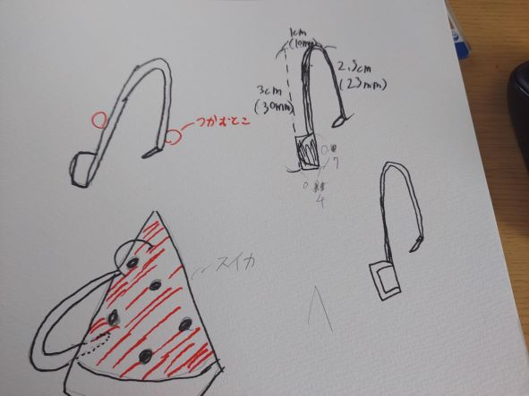
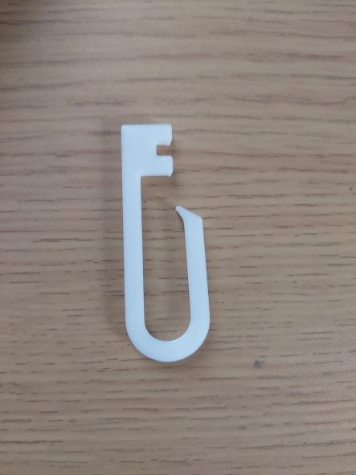
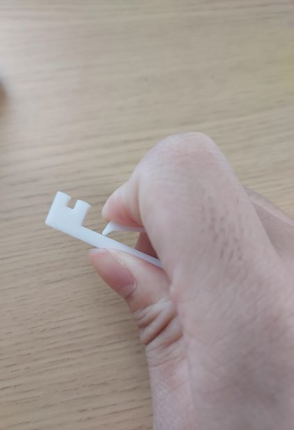

作品タイトル：「スイカ種取りピンセット」
私は今回、ピンセットをつかむようにしながら、スイカの種をシャベルのようにすくい取ることができるピンセットを作りました。
構想スケッチ

設計ファイル（stlファイル）
stlファイル
完成した作品

つかんでみた

作成した理由・感想
私がこのピンセットを作成した理由として、スイカを食べているときに、手を汚さず、１度口に入れて吐き出さすことをせずに種を取ることができるピンセットがあれば、手を洗う手間もなく、吐き出すことなく上品でいられると考え、作成しました。
作成した感想として、自分が考えたもの（スケッチなど）をfusion360で3Dモデリングすることが難しく、つまずきましたが、それ以降の3Dプリンターに出力するまでの段階はスムーズにいきました。
また、初めて3Dプリンターを使い、3Dモデリングしたものをどのようにstlファイルに置き換えて3Dプリンターに出力するかまでの段階をある程度理解することができました。